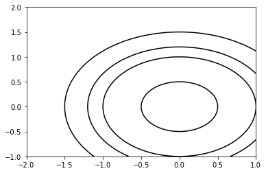

Basic Matplotlib Plot
Most data analysts just want to generate a plot quickly with minimal work.
However Matplotlib’s api has a slight learning curve- and it requires some
investment to pick up on its class hierachies and its terminologies.
I’ve jotted down some Matplotlib gems here so others users can have less
of a learning curve.
One key point to note is that regardless of what commands used to generate plots, they all devolve into one low level plot method- which is pyplot.subplots(). Exploting this method well is the key to build great looking charts.
The Axes class is the main class to work with for customising the plot type and the x and y axes. For working with all other plot elements, we use the Figure class. We acquire pointers (or references) to both the Figure and Axes whenever we call the pyplot.subplot() method.
Sample Matplotlib command usage:
| Topic | Intent | Usage |
|---|---|---|
| Plots | Create 2x1 subplots | fg, ax = plt.subplots(2, 1, sharex=True) |
| Spines | Make top spine invisible | ax.spines[‘top’].set_visible(False) |
| X Ticks | Set xtick color, label size, and direction |
ax.tick_params(axis=’y’, color=’#333333’, labelsize=’small’, direction=’in’) |
| Styles | Use preset plot styles | style.style.use(‘ggplot’) |
| Styles | See available styles | print(plt.style.available) |
| Text | Set text at x,y data points | ax.text(dates[2], prices[2], ‘Example’) |
| Text | Text with arrow | ax.annotate(‘Dividend’,(dates[2],prices[2]), xytext=(0.8, 0.9), textcoords=’axes fraction’, arrowprops = dict(facecolor=’grey’,color=’grey’)) |
| Subplots | Create subplots | ax = plt.subplot2grid((gx,gy), (x,y), colspan=c) |
| Subplots | Create subplots | ax = plt.subplot2grid((gx,gy), (x,y), rowspan=r) |
Sample Matplotlib script:
jupyter qtconsole
import numpy as np
import matplotlib.pyplot as plt
plt.figure() # Create a new figure window
xlist = np.linspace(-2.0, 1.0, 100) # Create 1-D arrays for x,y dimensions
ylist = np.linspace(-1.0, 2.0, 100)
X,Y = np.meshgrid(xlist, ylist) # Create 2-D grid xlist,ylist values
Z = np.sqrt(X**2 + Y**2) # Compute function values on the grid
plt.contour(X, Y, Z, [0.5, 1.0, 1.2, 1.5], colors = ’k’, linestyles = ’solid’)
plt.show()

Archive